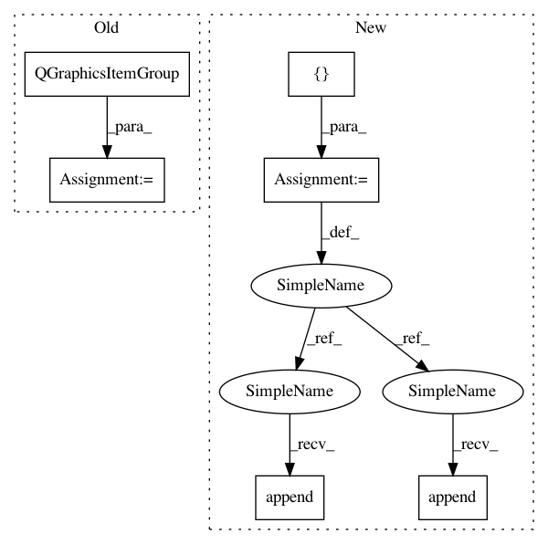

b093f94987708f402d88d9fb41503cbb1292ddd6,Orange/widgets/visualize/owboxplot.py,OWBoxPlot,box_group,#OWBoxPlot#Any#Any#,801
Before Change
return QGraphicsLineItem(x0 * scale_x, y0, x1 * scale_x, y1, *args)
scale_x = self.scale_x
box = QGraphicsItemGroup()
whisker1 = line(stat.a_min, -1.5, stat.a_min, 1.5, box)
whisker2 = line(stat.a_max, -1.5, stat.a_max, 1.5, box)
vert_line = line(stat.a_min, 0, stat.a_max, 0, box)
mean_line = line(stat.mean, -height / 3, stat.mean, height / 3, box)
After Change
return QGraphicsLineItem(x0 * scale_x, y0, x1 * scale_x, y1, *args)
scale_x = self.scale_x
box = []
whisker1 = line(stat.a_min, -1.5, stat.a_min, 1.5)
whisker2 = line(stat.a_max, -1.5, stat.a_max, 1.5)
vert_line = line(stat.a_min, 0, stat.a_max, 0)
mean_line = line(stat.mean, -height / 3, stat.mean, height / 3)
for it in (whisker1, whisker2, mean_line):
it.setPen(self._pen_paramet)
vert_line.setPen(self._pen_dotted)
var_line = line(stat.mean - stat.dev, 0, stat.mean + stat.dev, 0)
var_line.setPen(self._pen_paramet)
box.extend([whisker1, whisker2, vert_line, mean_line, var_line])
if stat.q25 is not None and stat.q75 is not None:
mbox = FilterGraphicsRectItem(
stat.conditions, stat.q25 * scale_x, -height / 2,
(stat.q75 - stat.q25) * scale_x, height)
mbox.setBrush(self._box_brush)
mbox.setPen(QPen(Qt.NoPen))
mbox.setZValue(-200)
box.append(mbox)
if stat.median is not None:
median_line = line(stat.median, -height / 2,
stat.median, height / 2)
median_line.setPen(self._pen_median)
median_line.setZValue(-150)
box.append(median_line)
return box
def strudel(self, dist, group_val_index=None):
In pattern: SUPERPATTERN
Frequency: 4
Non-data size: 6
Instances
Project Name: biolab/orange3
Commit Name: b093f94987708f402d88d9fb41503cbb1292ddd6
Time: 2017-01-18
Author: lan.zagar@gmail.com
File Name: Orange/widgets/visualize/owboxplot.py
Class Name: OWBoxPlot
Method Name: box_group
Project Name: biolab/orange3
Commit Name: b093f94987708f402d88d9fb41503cbb1292ddd6
Time: 2017-01-18
Author: lan.zagar@gmail.com
File Name: Orange/widgets/visualize/owboxplot.py
Class Name: OWBoxPlot
Method Name: box_group
Project Name: biolab/orange3
Commit Name: 8d19bee294b358bde55d69aab1872f1d1f9606e5
Time: 2017-01-11
Author: tankovesna@hotmail.com
File Name: Orange/widgets/visualize/owboxplot.py
Class Name: OWBoxPlot
Method Name: box_group
Project Name: biolab/orange3
Commit Name: 8d19bee294b358bde55d69aab1872f1d1f9606e5
Time: 2017-01-11
Author: tankovesna@hotmail.com
File Name: Orange/widgets/visualize/owboxplot.py
Class Name: OWBoxPlot
Method Name: strudel
Project Name: biolab/orange3
Commit Name: b093f94987708f402d88d9fb41503cbb1292ddd6
Time: 2017-01-18
Author: lan.zagar@gmail.com
File Name: Orange/widgets/visualize/owboxplot.py
Class Name: OWBoxPlot
Method Name: strudel